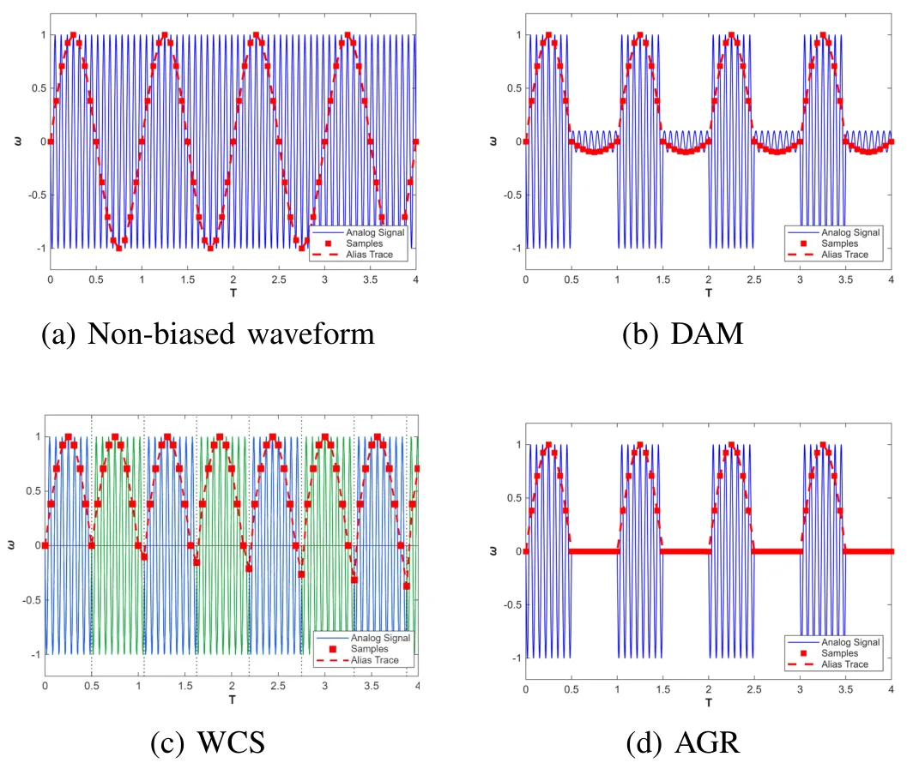
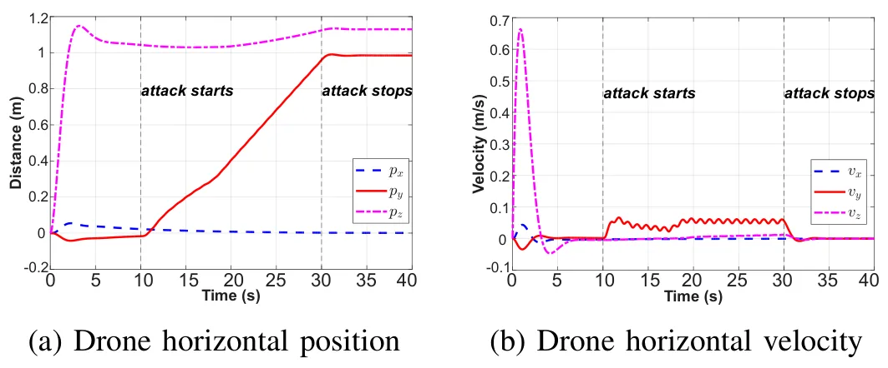
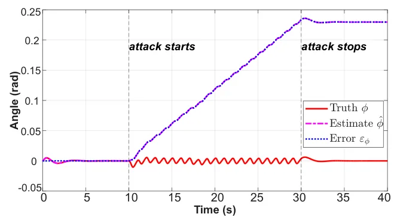
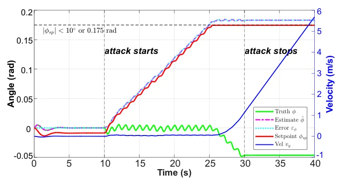
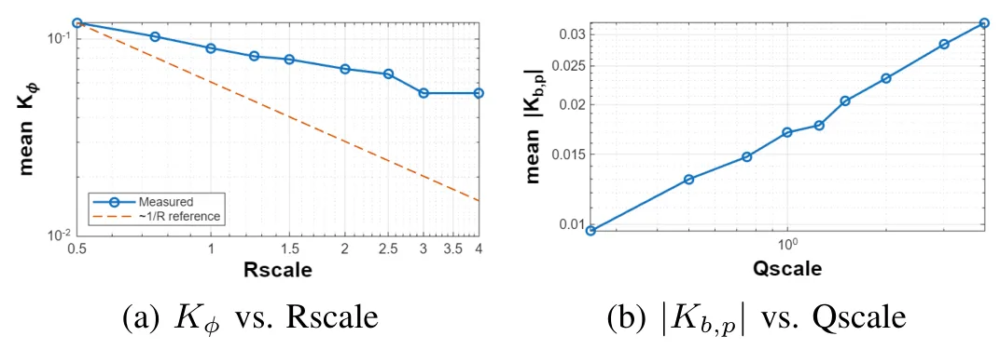

SonicNudge：通过估计器—控制器耦合实现悬停无人机可控位移SonicNudge: Controlled Displacement of Hovering UAVs via Estimator-Controller Coupling
虽非定位算法，但直接涉及 GNSS、光流、陀螺和估计器—控制器耦合，对自主导航安全有实际价值。
一句话工作总结
揭示传感器误差、状态估计和控制闭环的攻击面，对 GNSS/视觉/惯导系统安全评测有提醒意义。
摘要
论文研究超声共振引入的低层陀螺误差如何形成姿态估计偏置，并经位置控制环转化为悬停点偏移；在 PX4 风格栈中完成 81 次仿真和 10 余次室内外实验。
UAV displacement attacks have traditionally relied on spoofing sensors that directly report position or translational motion, such as GNSS and optical flow. In this work, we introduce SonicNudge, a new attack primitive that instead targets the gyroscope and shows that low-level inertial errors can be transformed into controlled displacement of hovering or slow-moving UAVs. The attack exploits estimator--controller coupling: a small gyroscope perturbation by ultrasonic resonance can persist as an attitude-estimation bias, and the flight controller can convert this biased estimate into a shifted hover point. This behavior is especially relevant to UAV tasks that require hovering, station-keeping, slow approach, or precise final alignment, such as perimeter denial, inspection, docking, landing alignment, and close-proximity operation, where meter-scale position errors can be operationally meaningful. We analyze this attack primitive in a PX4-style flight stack and validate it through 81 simulation runs and more than 10 indoor/outdoor physical experiments, showing that displacement is governed by estimator weighting, bias observability, and closed-loop position correction. Our study suggests that UAV and vehicle-system security should look beyond direct navigation spoofing and pay closer attention to low-level inertial errors and estimator--controller coupling as a subtle but important attack surface.
中文解读摘录
- 中文名：PIVOT：面向真实世界三维重建的多轨迹位姿、内参与新视点评测数据集和测试平台
- 方向：三维重建、NeRF、3DGS、位姿与相机内参评测。
- 要点：针对机器人和无人机环境中轨迹、位姿和内参不理想的问题，提供多轨迹采集数据、测量位姿与 COLMAP 优化位姿、标定与优化内参，并分别评估已见/未见轨迹、位姿来源和内参来源的敏感性。
- 判断：对真实部署下的重建评测很有价值，尤其适合检查“训练轨迹内插”是否掩盖了新轨迹泛化问题；不是 SLAM 算法本身。
图表/页面预览

{kind=link}

{kind=link}

{kind=link}

{kind=link}

{kind=link}
